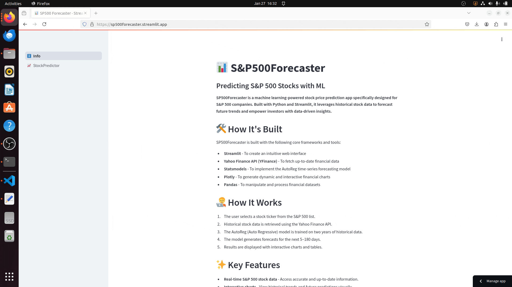
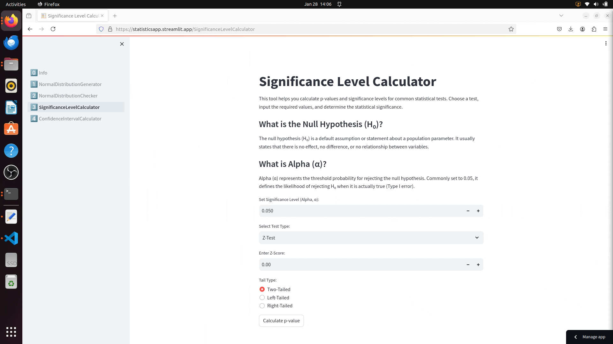

About Me

Hello! Thank you for visiting my portfolio. I like to tinker with data in all its shapes and forms. Currently, I work as a Pricing Analyst for Cardinal Health in Dublin, Ireland. My role is to act as a bridge between IT and several stakeholders, ensuring that all data is accurate within our systems and does not negatively impact the business's financial health. To complement my job, I recently graduated with an MSc in Data Analytics from CCT College. Finally, to continue developing my skillset, I am creating applications and deploying them with Streamlit. The data analytics field is never boring!
Streamlit Apps
Dublin Bus App
The app processes real-time API data to track live Dublin bus locations, parsing JSON responses to extract relevant details such as bus positions, routes, and calculating estimated arrival times.
Demo:

Live app:

Flight Tracking App
The app retrieves real-time flight data using the OpenSky API, providing live updates on flight states, including latitude, longitude, altitude, and callsigns. It processes this data dynamically, filtering flights by airline and location, and integrates OurAirports and OpenFlights datasets to compute nearest airports and enrich flight details for visualisation.
Demo:

Live app:
SP500 Forecaster
This app leverages Machine Learning for stock prediction using historical financial data from S&P 500 stocks. It retrieves stock price data via the Yahoo Finance API (YFinance) and applies AutoReg (Auto Regressive) modeling from the Statsmodels library to generate predictions for up to 180 days.
Demo:
Live app:
Crypto Predictor
CryptoPredictor is a Machine Learning-Powered app that forecasts cryptocurrency prices using historical data. It integrates real-time data from the Yahoo Finance API and CoinGecko API for up-to-date cryptocurrency market insights. The app employs a Long Short-Term Memory (LSTM) neural network, optimised for time-series predictions, to analyse historical trends and generate price forecasts for the next 1–90 days.
Demo:

Live app:
Statistics App
This app is an interactive app for numerical analysis and statistical testing, supporting normality checks, p-value calculations, and confidence intervals. It utilises NumPy for computations, SciPy for statistical tests, Pandas for data handling, and Matplotlib for visualising results.
Demo:
Live app:
MSc Capstone Project
Federated Learning: Evaluating Popular Frameworks and Developing a Cross-Client Horizontal Server
This project investigates Federated Learning (FL), a decentralised machine learning approach that enhances data privacy. It evaluates five popular FL frameworks and develops a cross-client horizontal FL server for both technological and medical scenarios using IID and non-IID data. The findings reveal improved model accuracy in the technological scenario but a slight decline in the medical scenario. The research highlights the potential of FL while identifying limitations and areas for future improvement in server infrastructure and privacy concerns.